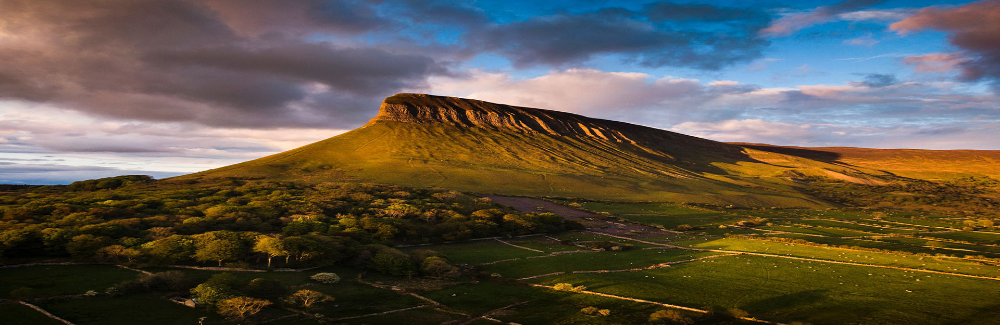

Killarney
Journey through timeless natural beauty, vibrant culture and rich history.

Sligo
Known for its literary heritage and rugged countryside

Galway
A popular meeting spot surrounded by shops and traditional pubs that often offer live Irish folk music.